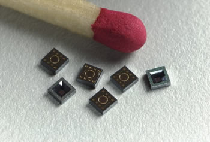

Invenzioni
che cosa sono i mems?

La sigla MEMS sta per Micro Electro-Mechanical Systems ed indica quello che la tecnologia del microscopico ha prodotto (si intende qui che la dimensione media degli oggetti considerati sia di un micrometro), consentendoci di rendere la nanotecnologia una realtà. Questi dispositivi sono stati riconosciuti come una delle tecnologie più promettenti del XXI secolo, capaci di rivoluzionare sia il mondo industriale, sia quello dei prodotti di largo consumo. I microsistemi elettromeccanici non sono altro che un insieme di dispositivi di varia natura (meccanici, elettrici ed elettronici) integrati in forma altamente miniaturizzata su uno stesso substrato di silicio, che coniugano le proprietà elettriche degli integrati a semiconduttore con proprietà opto-meccaniche. Si tratta dunque di sistemi "intelligenti" che abbinano funzioni elettroniche, di gestione dei fluidi, ottiche, biologiche, chimiche e meccaniche in uno spazio ridottissimo, integrando la tecnologia dei sensori e degli attuatori e le più diverse funzioni di gestione dei processi. Già si parla, tuttavia, di Nano Electro-Mechanical Systems o NEMS, a testimoniare la rapidissima evoluzione che la tecnologia moderna subisce, essendo ora in grado di ridurre al nanometro la dimensione dei dispositivi prodotti.